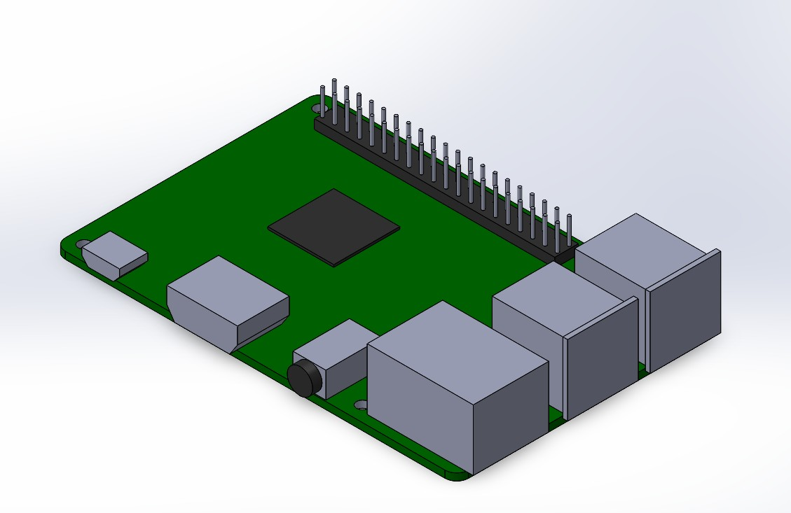
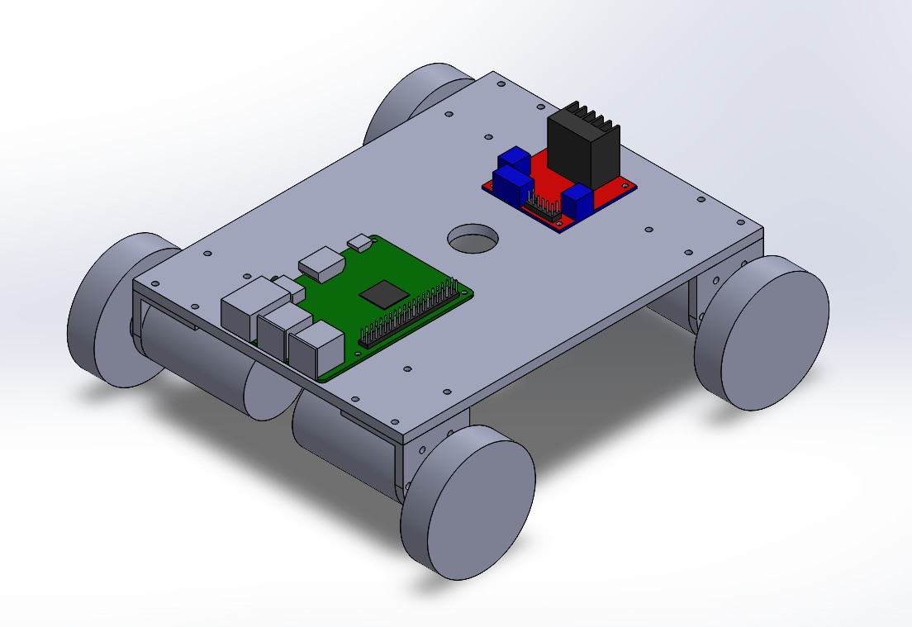
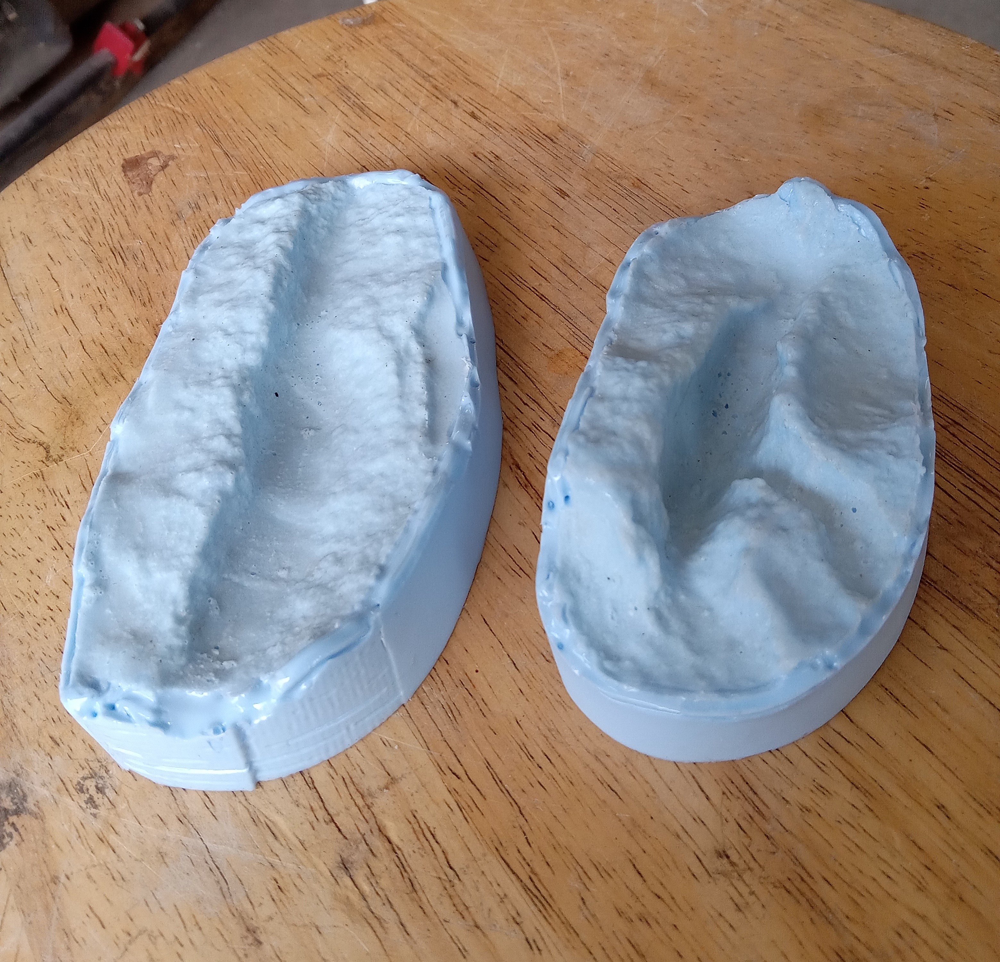
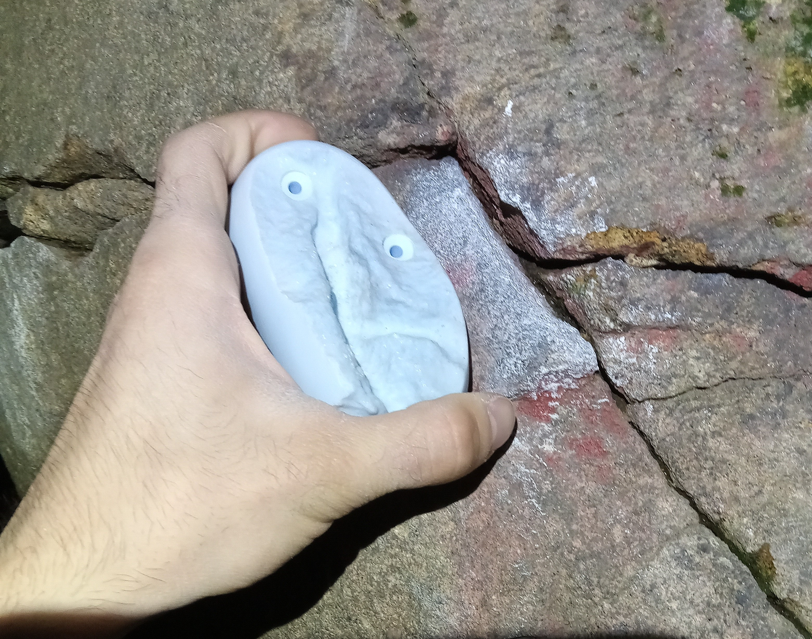
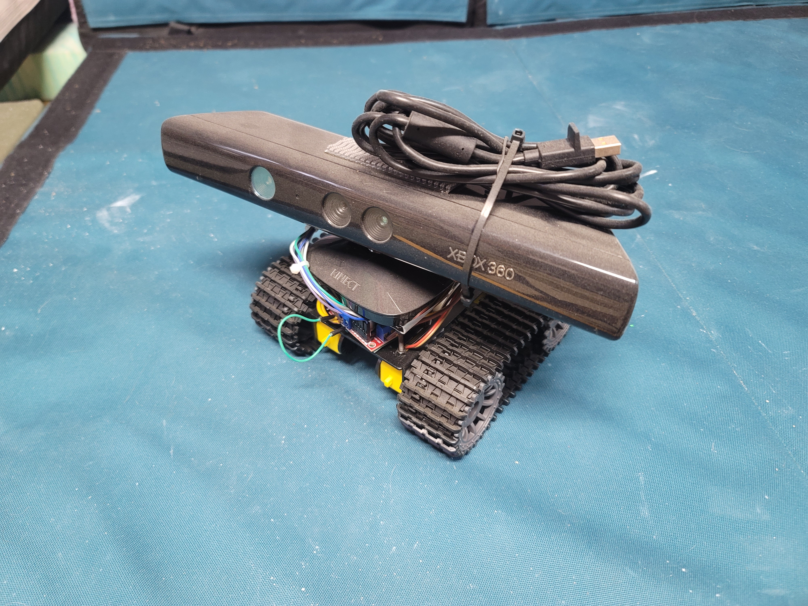

Projects
Hyper Imersive Driving Simulator
Worked with a team to develop a motion base driving simulator. Using real vehicle component to simulate the cabin environment of an automobile we successfully created an impersive experience. Interpeted telemetry data to safely imitate vehicle like motion on a real world motion base.
Robot 3D Modeling


Created a 3D assembly model of all the components with each component having its own model. With the 3D model created a BOM to build the robot and print any custom parts.
Polyurethane Surface Replication


Devloping a way to replicate surface texture with minimal losses in accuracy. Taking a more physical approach to directly imprint precise details onto the replication to avoid loss in digitalization. This method is more cost efficient than 3D scanning techniques while also picking up on more sensitive details.
Wall-E

The first robot I built after my UVA internship. Wall-E is a tank drive robot that is controled by a Raspberry Pi 4. Mounted on top is a Microsoft Kinect that can be used to 3D map its enviorment for robot navigation.